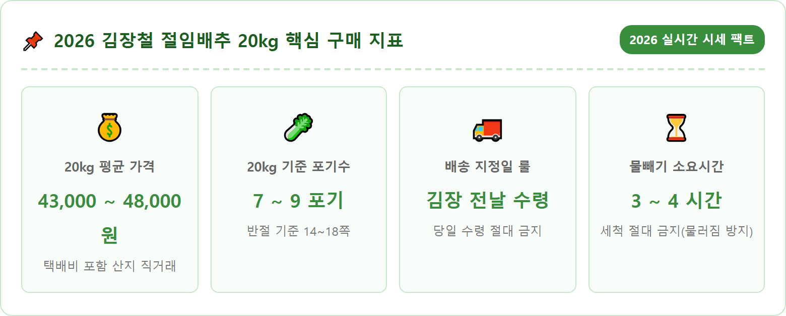
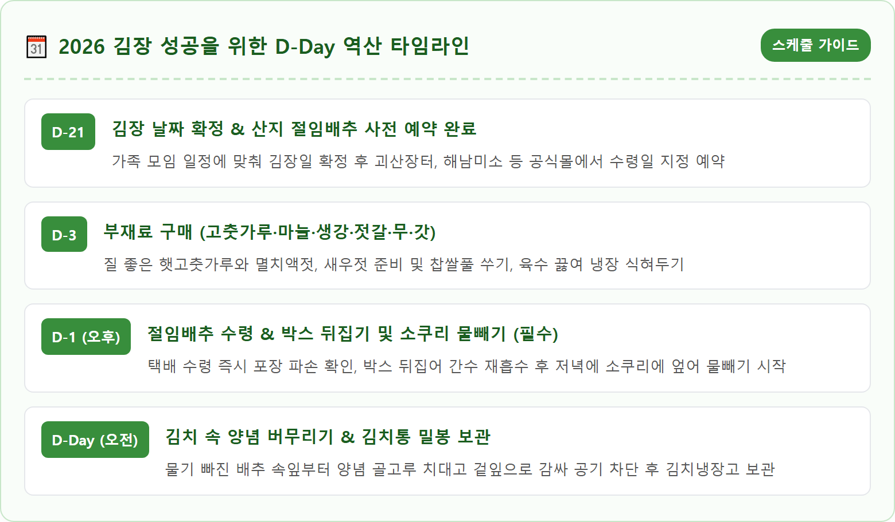
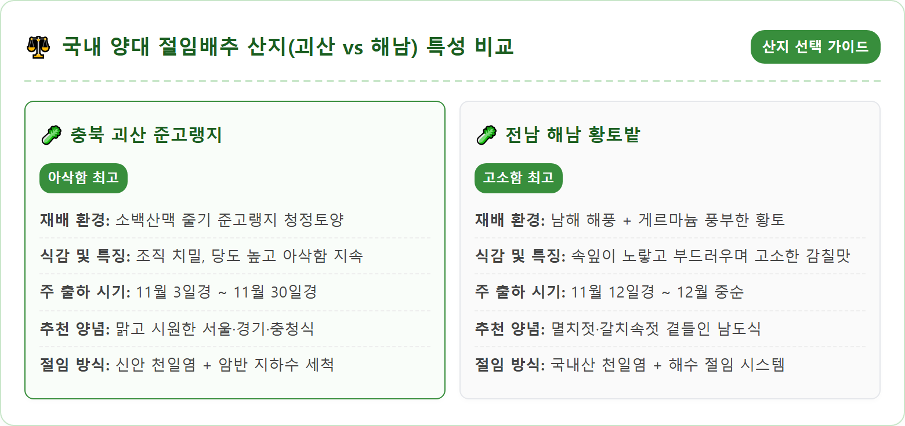
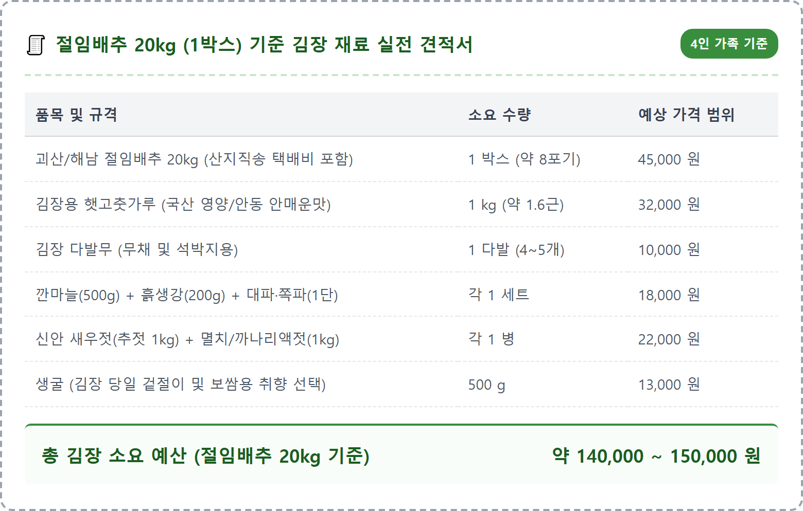
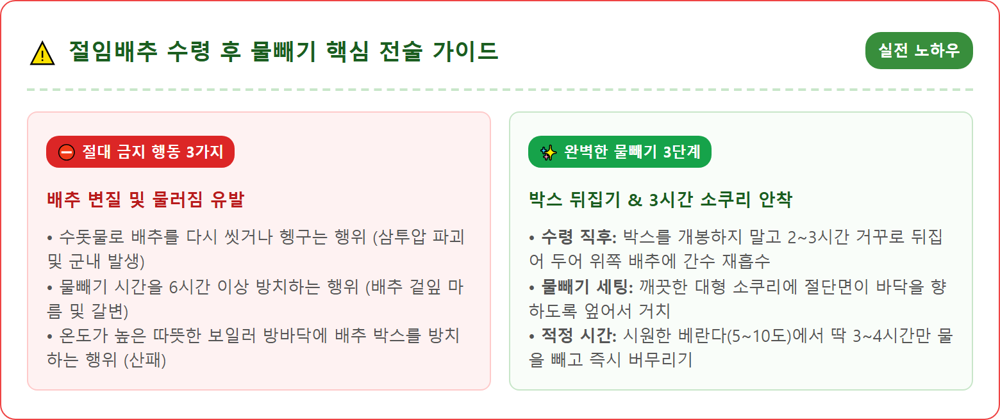
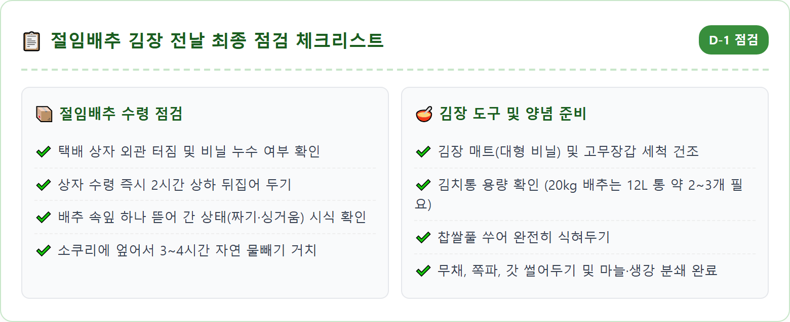
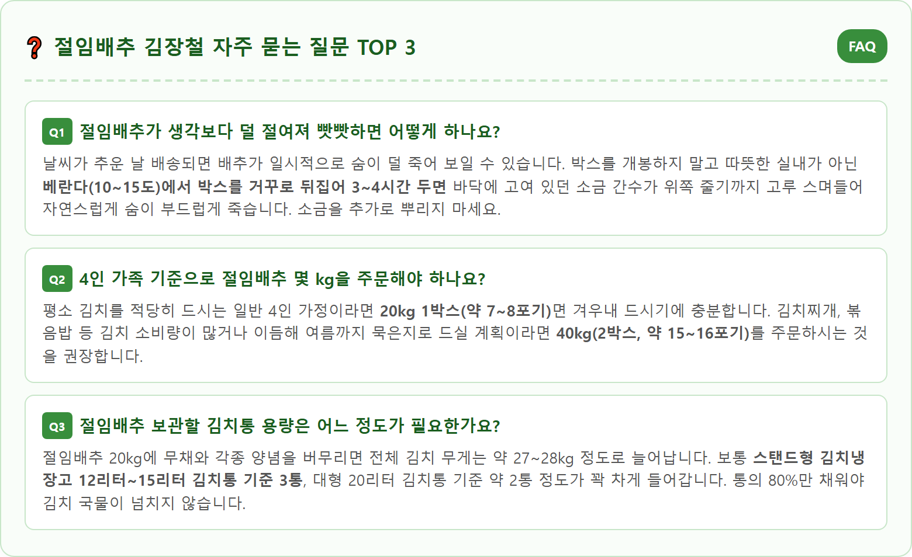

A crisp and vibrant close-up food photography shot of premium Korean salted and pickled Napa cabbages (Jeorim Baechu) in a clean Korean kitchen setting. Halved fresh Korean winter cabbages with bright golden-yellow dense hearts and crisp pale green outer leaves, glistening with natural moisture after being salted with natural sea salt. Cabbages neatly arranged cut-side down in a traditional stainless steel colander to drain water. In the background, fresh red chili powder, garlic cloves, ginger, and daikon radishes ready for kimchi making. Warm natural morning daylight, authentic Korean autumn culinary atmosphere, hyper-detailed 8k texture, commercial food photography, 1:1 aspect ratio.







| 항목 | 상세 요약 안내 |
|---|---|
| 핵심 산지 | 충북 괴산군 (시골절임배추) / 전남 해남군 (황토절임배추) |
| 2026년 20kg 평균 시세 | 택배비 포함 43,000원 ~ 48,000원 선 (농가 직거래 기준) |
| 20kg 내 포기수 | 약 7~9포기 (반절 14~18쪽 내외) |
| 권장 예약 시점 | 김장 예정일 기준 14일 ~ 21일 전 사전 예약 완료 필수 |
| 배송일 지정 원칙 | 반드시 김장 전날(D-1) 오후 수령으로 날짜 지정 |
| 물빼기 수칙 | 수돗물 세척 절대 금지 / 소쿠리에 엎어서 3~4시간만 자연 물빼기 |
| 공식 구매처 | 괴산장터(gsjangter.go.kr), 해남미소(haenammiso.online), 농협몰 |